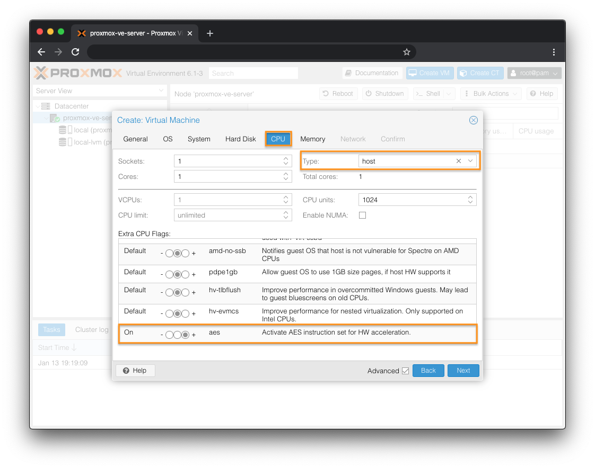

Clear Linux* OS on Proxmox* Virtual Environment¶
This guide explains how to create a new VM in Proxmox VE 6.1-3, install and run Clear Linux OS on as a guest OS.
Prerequisites¶
Proxmox VE 6.1-3 server already set up and you have familiarity with how to use it.
Download the Latest Clear Linux OS Live Server Image¶
Visit our Downloads page.
Download the file
clear-<release number>-live-server.iso, also called the Clear Linux OS Server.Note
<release-number> is the latest Clear Linux OS auto-numbered release.
Upload Clear Linux OS Live Server Image to Promox Server¶
Connect to your Proxmox server and log into an account with sufficient permission to create and manage VMs.
Under the Server View window, select the local storage. See Figure 1.
On the right window, click Upload.
Figure 1: Proxmox - Upload ISO¶
Set the Content as ISO image. See Figure 2.
Click Select File… and select the Clear Linux OS ISO.
Click Upload.
Figure 2: Proxmox - Select ISO to upload¶
The ISO should now appear in the Content list. See Figure 3.
Figure 3: Proxmox - Content list¶
Create VM on Proxmox¶
Under the Server View window, select your Proxmox node. See Figure 4.
On the right window, click Create VM.
Figure 4: Proxmox - Create VM¶
In the General tab: | See Figure 5.
Check the Advanced checkbox.
In the Name field, give the VM a name.
Figure 5: Proxmox - Create VM - General settings¶
In the OS tab: See Figure 6.
Select Use CD/DVD disc image file (iso).
For Storage, select local.
For ISO image, select the Clear Linux OS ISO you uploaded earlier.
Set the Type to Linux.
Set the Version to 5.x - 2.6 kernel.
Figure 6: Proxmox - Create VM - OS settings¶
In the System tab: See Figure 7.
For BIOS, select OVMF (UEFI).
For Storage, select an appropriate location.
For Machine, select q35.
Figure 7: Proxmox - Create VM - System settings¶
In the Hard Disk tab: See Figure 8.
For Disk size (GiB), set the desired disk size for your VM. A minimum of 4GB is required for Clear Linux OS.
Figure 8: Proxmox - Create VM - Hard Disk settings¶
In the CPU tab: See Figure 9.
Set the Type to host.
For the Extra CPU Flags, scroll to the bottom and turn on the aes setting by clicking the + radio button.
 Figure 9: Proxmox - Create VM - CPU settings¶
In the Memory tab: See Figure 10.
For Memory (MiB), set a desired value.
Figure 10: Proxmox - Create VM - Memory settings¶
In the Network tab: See Figure 11.
For Model, select E1000.
Figure 11: Proxmox - Create VM - Network settings¶
In the Confirm tab: See Figure 12.
Confirm the settings.
Click Finish to create the VM. The new VM should appear under the Server View window.
Figure 12: Proxmox - Create VM - Confirm settings¶
Start VM and Install Clear Linux OS on Promox¶
Under the Server View window, select your newly-created VM. See Figure 13.
On the right window, click Start.
Click Console button to bring up a console and interact with it.
Figure 13: Proxmox - Start VM¶
Follow the instructions in the Install Clear Linux* OS from the live server guide starting at the Launch the Clear Linux OS Installer section.

{kind=link}
{kind=link}
{kind=link}
{kind=link}
{kind=link}
{kind=link}
{kind=link}
{kind=link}
{kind=link}
{kind=link}
{kind=link}
{kind=link}
{kind=link}